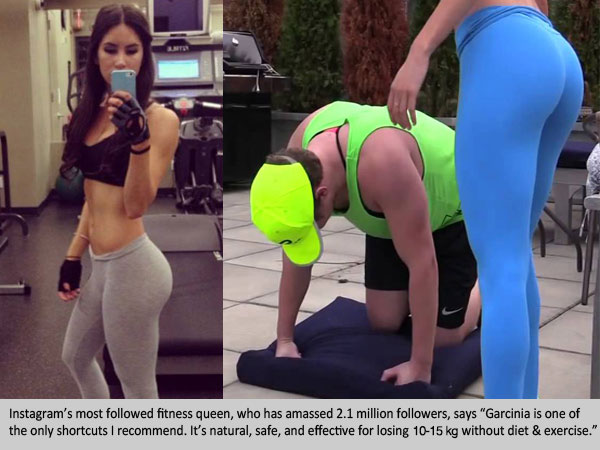

By Helen Crisell | 2,391,558 | 656
For the past three months our readers have been going crazy over two internet products that are helping women and men in Canada and across the world lose weight extremely fast. This revolutionary system, called by some "The Holy Grail of Weight Loss" has been featured on countless popular TV shows, proven to be safe for ongoing use and best of all - it's totally affordable for anyone.
Waves of celebrities have lost a significant amount of body fat with just these 2 diet cleanses. The combined effect is clinically proven to not just rapidly burn fat off your physique but as importantly, to flush out all the destructive toxins in your body and increase your metabolism, all without harming your immune system.
As we have often reported when researching the latest diet trends, losing weight often feels like an impossible challenge and all too frequently the results are painfully disappointing. However, after an exhaustive research effort including interviewing actual dieters using this exact system, we're more than excited about this breakthrough. Keep reading and you'll find out why we created this special report.
Dieting Resulted in Shedding at least over 10kg in Just 1 Month for our readers!
The reason why most diets fail, in our opinion, is that they impose unrealistic restrictions on how you live your life. Some advocate eating tons of protein while others emphasize restricting carbohydrates. In either case, you're left with having to make rather drastic changes to the types of food you eat and when you eat it. In this special report, we take an in-depth look at an emerging and promising weight loss trend that we believe is a game changer, that won't require time in the gym or cutting your calories... and best of all it won't break the bank.
You may have heard of the enormously popular Garcinia Cambogia in the news. It is a chemical from red raspberries (Rubus idaeus) - scientifically proven to tear away fat from you body. In studies by renowned health research institution UCLA in Los Angeles - Total Garcinia was proven to ignite your metabolism and your body's hidden fat burning capabilities by 318% when taken regularly. However, the problem encountered by many hoping to embrace this miracle dieting system, is that nearly 90% of the imitation Garcinia Cambogia products out there are NOT pure. Most fluctuate between the 60-70% purity levels - so we tracked down the original 'Total Garcinia' to understand the difference. The Total Garcinia Formula delivers 95% pure Garcinia Cambogia extract to your body so to put it simply - we were intrigued.
To take our study a step further, we also analyzed and discovered that those taking 'Total Garcinia' who experienced the most shocking weight loss results were also the study group that was using the natural detoxifier 'Cleanse Total' as well. Together, testimonials claim the combined usage of these two products led to significant weight loss, more energy and generally a healthier day to-day feeling. If you're skeptical, you're not alone. When we first learned about this weight loss combo, our diet fad radar went off right away.
Nevertheless, as we began to investigate the countless success stories reported by people from all around the globe, we decided that this weight loss trend was worthy of a closer examination. Moreover, we found it of particular interest that these people had not significantly changed their current lifestyles.
Our reader Jennifer from Toronto was reported to have lost a healthy 14kg in just 5 weeks while being on the Total Garcinia and Cleanse Total combo diet.
In the story on her blog she states, "I couldn't believe how easy it was. I didn't change my diet or my daily routine, but the fat melted off like it is butter. I love this stuff! Finally a diet that just works."
For the HealthNews24 test, it was inevitable that I was to be the guinea pig for this diet since I was about to get married. I wanted to lose 12kg for my wedding. In order to try the Total Garcinia and Cleanse Total diet, I ordered the two products online. Although there are many similar products available, I chose Total Garcinia on the basis that it had been clinically tested and approved at GNP Labs in Los Angeles, California - an organization renowned for their strict guidelines on weight management products.
The discounted bottle of Total Garcinia was delivered in a few days after ordering and shipping was very cheap which was a nice bonus (though read on as there is now actually a FREE TRIAL offer with just a shipping charge that wasn't previously available). Total Garcinia is one of the most concentrated and purest weight loss products on the market.
Total Garcinia has been clinically proven to:
- Deliver 4 Times More Weight Loss Than Diet and Exercise Alone
- Boosts Energy
- Be Rich in Antioxidants - Beats Blueberries, and even Gogi Berries!!
- Promote Cardiovascular and Digestive Wellness
Although we were pretty skeptical, we wanted to find out for ourselves if this product could actually do everything that it claimed. Most of the success stories talk about combining Total Garcinia with a cleansing product called Cleanse Total to achieve maximum weight loss. The idea behind combining the products is that while the Total Garcinia encourages weight loss and increases energy, Cleanse Total helps rid your body of toxins and allows your body to work and burn calories more efficiently for the long term. After further research, we put Cleanse Total to the test.
Cleanse Total has been clinically proven to:- Help Eliminate Extremely Damaging Toxins That Have Built Up Over the Years
- Destroy Harmful Parasites in Your Digestive Tract
- Removes 'Sludge' From the Walls of the Stomach (that prevents Fat Burning!)
- Helps Get Rid of Gas and Bloating
- Helps Regulate Your Metabolism
- Increase Energy, Libido and Alertness
We loved the fact that the Cleanse Total product is backed by a 100% satisfaction guarantee.
Putting the Total Garcinia and Cleanse Total Combo to the Test
Both Total Garcinia and Cleanse Total arrived within 4 days of having placed my order online.
My Results - I Dropped 12kg In Just 1 Month and Lost 3 Dress Sizes. I Nearly Cried!
Week One:
After one week on the diet using both products I was surprised at the dramatic results. My energy level was up, and I wasn't even hungry. A welcomed side effect of the Total Garcinia and Cleanse Total diet is its power to curb the appetite.
I honestly felt fantastic!
Best of all, I didn't even change anything about my daily routine. On Day 7, I got on the scale and couldn't believe my eyes. I had lost 2kg. But I still wasn't convinced, since they say you lose a lot of water weight at the beginning of any diet. I wanted to wait and see the results in the upcoming weeks. But it sure was looking up! I now weighed under 58kg for the first time in years!
Week Two:
After two weeks of using both supplements, I started the week off with even more energy, and actually sleeping more soundly than before. I was no longer waking up during the night and tossing and turning because my body was actually able to relax (this is a result of getting rid of the toxins, I think). Plus I still managed to lose another 4kg, putting me at an unbelievable 6kg of weight loss, in just 2 weeks.
I must admit that I'd starting to believe that this diet is more than just a gimmick.
Week Three:
After 3 weeks, all my doubts and skepticism had absolutely vanished! I am down, 2 full dress sizes after losing another 2kg. And I still have a ton of energy. Quite often, around the third week of other diets, you tend to run out of steam. But with the Total Garcinia and Cleanse Total diet my energy levels didn't dip, instead they remain steady throughout the day. I no longer need that cat nap around 3pm in the afternoon! I am even noticing that my stomach is digesting food so much better. No bloating or embarrassing gas after I eat.
Week Four:
After the fourth week, my final results were shocking. I lost an unbelievable 12kg since starting the Total Garcinia and Cleanse Total diet! Actually everyone at HealthNews24 is kicking themselves for not having volunteered to be the guinea pig. Using the Total Garcinia and Cleanse Total in week 4, I lost an additional 7kg. The results are consistent! But to be honest, I really didn't have much more than that left to lose. I am definitely going to continue taking the Total Garcinia afterwards because it has so many antioxidants and vitamins that makes my skin look unbelievable.
In conclusion, if you are a little doubtful about the effects of this diet, you need to try it for yourself; from our own test, the results are real. We at HealthNews24 review more than 100 diets each year, and we had our doubts initially, but we were quickly turned into believers. After conducting our own study, we are pleased to see that people really are finding success with the diet.
IMPORTANT: *In clinical testing it was proven that you must use BOTH products in this method to achieve similar results.
- 100% pure, premium Garcinia Cambogia extract
- 1,000mg per serving as recommended by studies
- All-Natural 60% HCA content per serving
- Made in the USA - FDA/GNP certified laboratory
- Comes With a 100% Satisfaction Guarantee!
- Clear toxins from colon and bloodstream
- Strengthen liver's ability to filter toxins
- Reduce gas and stomach bloating
- Increase metabolism and fat-burning
- Comes With a 100% Satisfaction Guarantee!
Guys, we rarely do these special reports because the reality is that there is just a bunch of rubbish out there claiming to be that next big weight loss breakthrough. But this was just too good to keep away from the public. Try it out and send us your thoughts!
Stock is limited. Discounts expire on October 30, 2016
Would you like to share a consumer tip for next week? If so, please send us an email.
COMMENTS

ADD COMMENT
Please remember to keep comments respectful. Abusive comments will not be tolerated, and will result in both the removal of the comment as well as a permanent ban to the user who posted it.